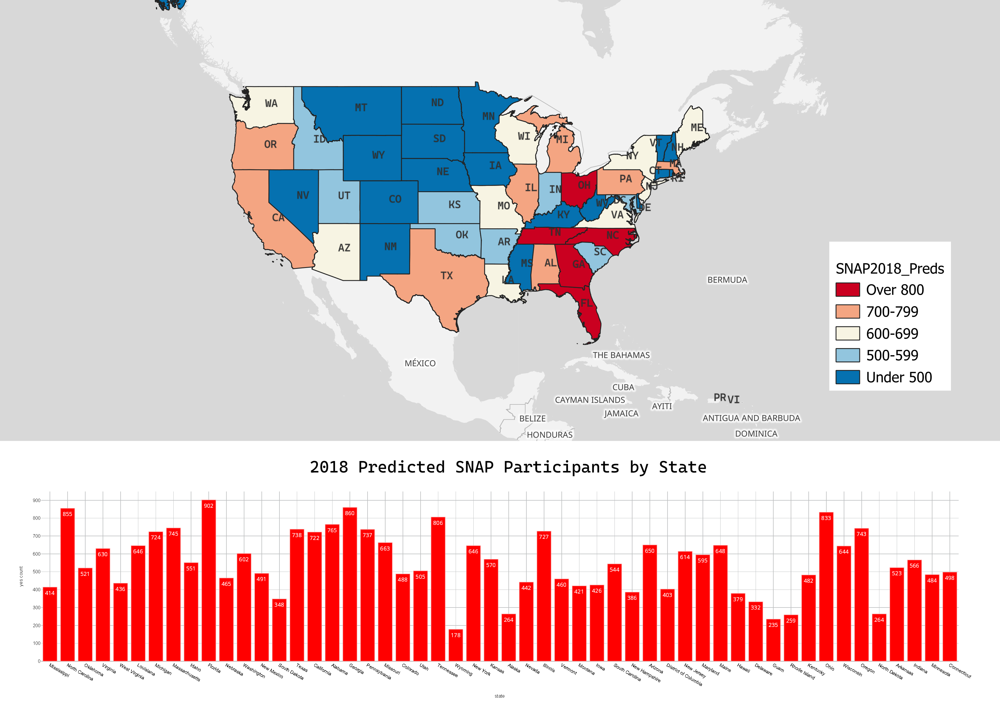
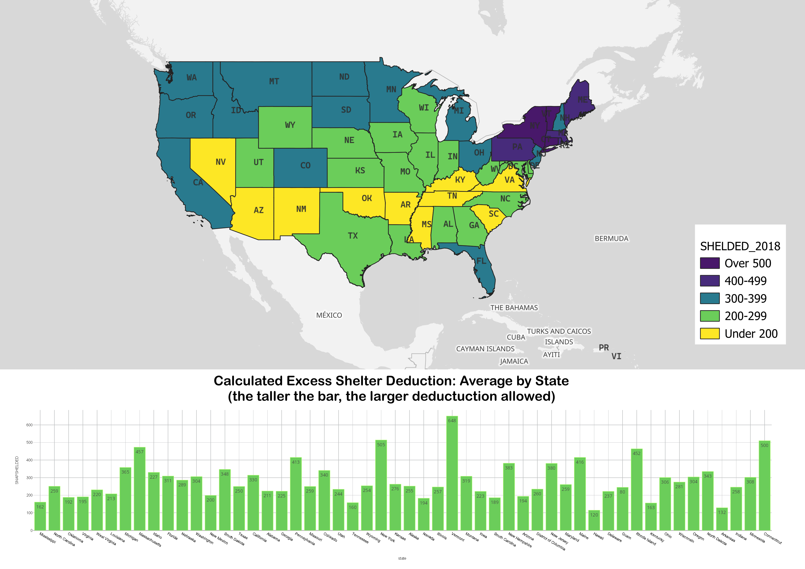
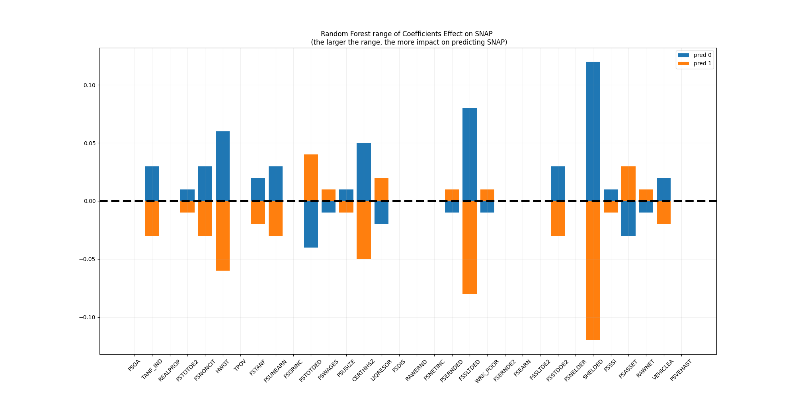
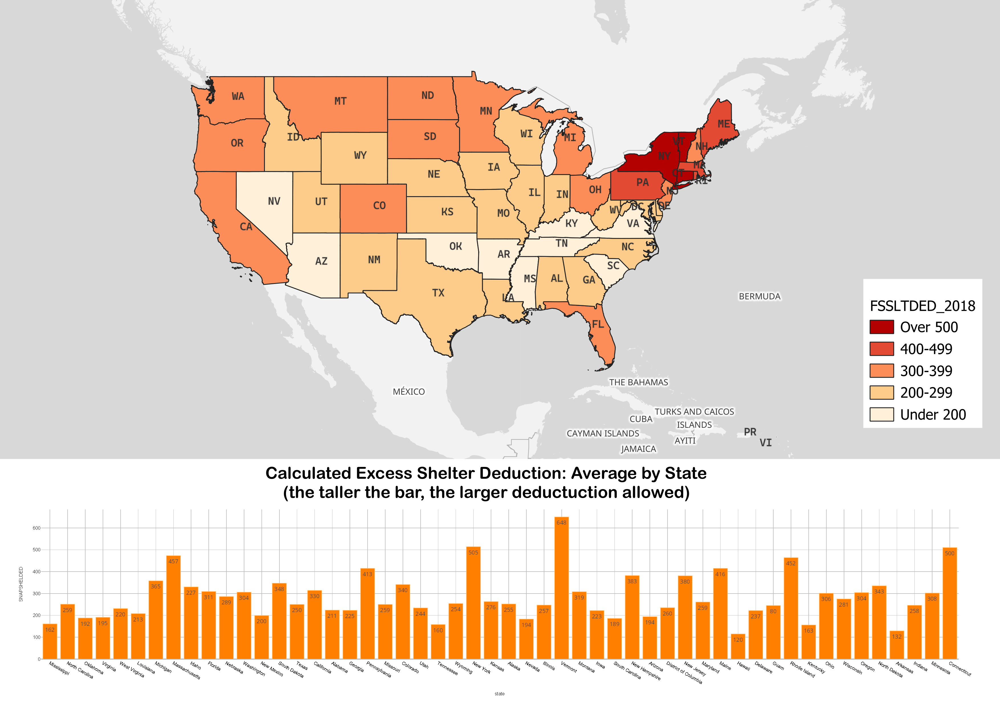
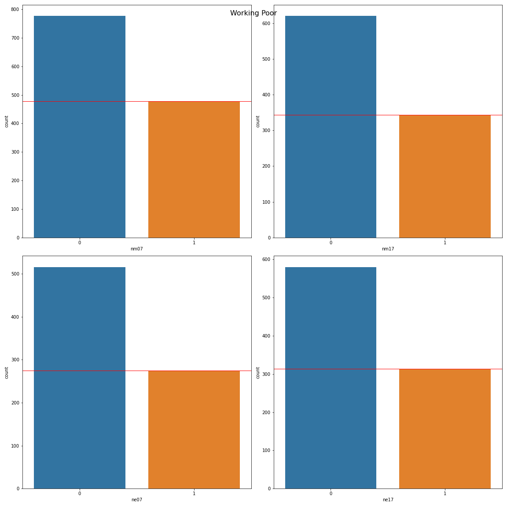

Which communities are at risk for food insecurity during COVID? A predictive model to determine areas at risk.
Overview
SNAP (formerly Food Stamps) is a critical lifeline for households struggling to cover grocery costs.
Economic downturns hit certain communities harder — and those same communities tend to recover more slowly.
This project assessed demographics vulnerable to food insecurity using SNAP Quality Control data from the USDA,
conducting a 10-year gap analysis comparing 2007 and 2017 datasets to examine lasting impacts on vulnerable communities.
Using an ArcGIS spatial analysis MOOC, two contrasting counties were identified as study areas:
San Juan County, New Mexico (an emerging hot spot) and
Cherry County, Nebraska (an emerging cold spot). The target variable was
CAT_ELIG — whether a household was eligible (1) or not eligible (0) for SNAP benefits.

↑ Click to enlarge — Hot and cold spots identified via ArcGIS spatial analysis
Methodology
Each dataset started with 400,000+ records and 800 features. Through nullity assessment,
correlation analysis, and domain knowledge, the data was reduced to 32 features and ~4,000 final records.
Downloaded SNAP Quality Control data from the USDA for 2007 and 2017
Removed columns with all null values, then dropped columns with more than 50% nulls
Imputed remaining nulls with the mean using sklearn SimpleImputer
Used correlation analysis on 2007 data to select top 5 features per section — 32 final features
Extracted and compared county-level data for San Juan County, NM and Cherry County, NE
Built a Vote Ensemble model combining Random Forest, Gradient Boost, and Bagging Classifier
Achieved a 95% cross-validation score on the final model
Visualized feature importances and state-level predictions using Matplotlib and Seaborn

↑ Click to enlarge — Vote Ensemble model performance (95% cross-validation score)

↑ Click to enlarge — Feature importance from Random Forest model
Key Findings
Several patterns emerged from the analysis:
SNAP requesters typically had small households — one to two children maximum
Approximately 50% were single mothers heading households
The top 4 predictors were all related to shelter and housing costs: FSSLTDED, SHELDED, FSTOTDED, and FSSTDDE2
New Mexico saw ~100 fewer working poor on SNAP in 2017; Nebraska saw ~50 more
In 2007, SNAP recipients received less assistance from other welfare programs than in 2017
San Juan County, NM showed greater economic vulnerability than Cherry County, NE across both years

↑ Click to enlarge — State-level comparison: New Mexico vs Nebraska

↑ Click to enlarge — Model coefficients: top predictors related to shelter and housing
Predicted SNAP Households by State (2018)
The original project identified a next step: building an interactive geographic dashboard to pinpoint
high-need areas. The map below realizes that goal — 2018 SNAP household predictions visualized at the state level.
↑ Hover over a state to see predicted SNAP household counts.